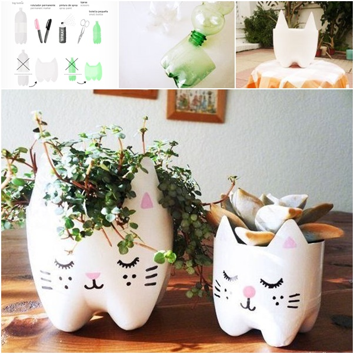
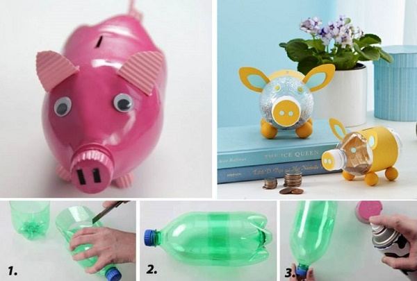
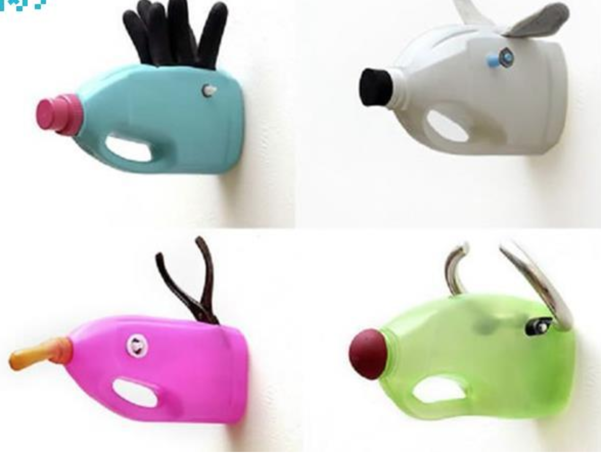
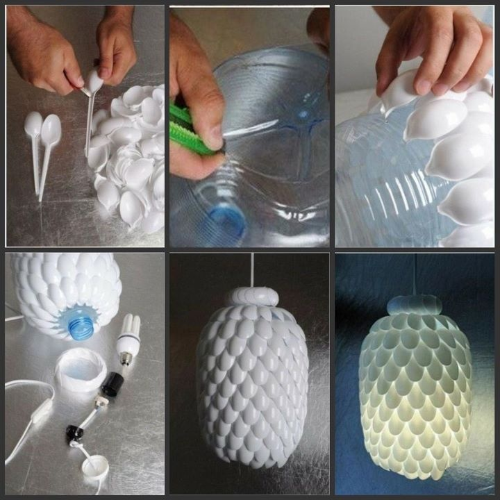

DIY Ideas for Plastic Recylables
1. Plastic Bottle Planter

Tools Needed:
- Any plastic bottle
- Paint
- Art knife
- Color markers
- Plants or Candies
Instructions:
- Cut out the shape of the cat or any animals you'd like
- Paint the entire bottle that is cutted out
- Draw faces on the bottle
- The bottle could be used as a planter or a candy holder
2. Piggy Bank

Tools Needed:
- Any plastic bottle
- Fabrics
- Glue and/or tape
- Color markers or paint spray
- Four additional bottle caps or other tools that can be used as the pig's legs
Instructions:
- Cut out ears and two circle shapes from a fabric
- Cut a slot on the bottle
- Glue the ears onto the bottle and the two circles onto the bottle cap
- Wrap a piece of fabric around the body of the bottle and then tape or glue it
- Glue the four bottle caps to the bottom of the bottle as the pig's legs
3.Wall Handle

Tools Needed:
- Empty detergent bottle
- Any decorations you'd like
- Hotglue
Instructions:
- Hotglue the detergent bottle to the wall with the handle on the bottom
- Make the eyes out of fuzzy balls or other used tools
- Glue it on the detergent bottle like the image
4. Bouquet Lamp

Tools Needed:
- Around 35 used plastic bottles
- Art knife
- Glue and/or tape
- Lightbulb
- Light
Instructions:
- Cut out the end part of the bottles
- Glue approximately 7 end parts into a flower
- Glue approximately 5 flowers into a sphere
- Put in the lightbulb and place it on the stand
5. Spoon Lamp

Tools Needed:
- Any big plastic bottle
- Used plastic spoons
- Hotglue
- Lightbulb
Instructions:
- Cut out the handles on the spoon
- Hotglue the spoons in the pattern shown in the picture
- Put in the lightbulb and hang the lamp on the ceiling